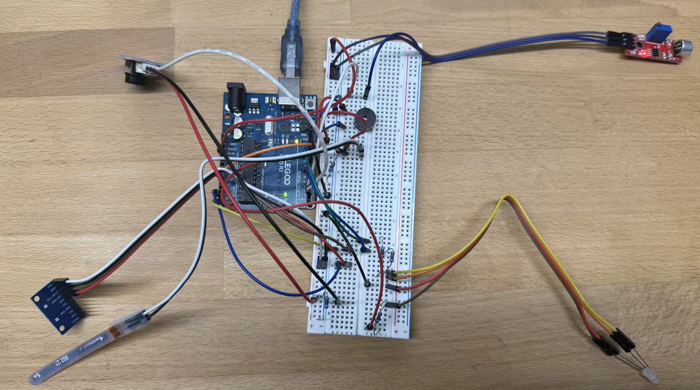

Resistance Calculation for Bend Sensor

For the bend sensor, I measured its resistance when it's flat, which is around 10k Ohm.
I then measured its resistance when its's bent, which is around 100k Ohm.
With the purpose to build a voltage divider so the Arduino can read a clear analog range,
I chose the 30k Ohm resistor that is near the nominal resistance of the sensor,
to ensure the sensitivity.
I also calculated the voltage readings under two scenarios,
which proves the voltage divider gives a large difference that Arduino can detect easily.
Resistance Justification for the button
The calculations for the normal LED resistance show that a minimum of 150 ohm is needed to keep LEDs safe; for clarity, I used 220 ohm resistance for all the RGB LEDs.
Resistance Calculation for the RGB LED

For the button's resistance, it aims to make the current as small as possible to reduce current waste, as well as the circuit safety, and I adpated an internal pull-up resistance at Pin 2 for these purposes.
Circuit Construction

Firmware for Arduino IDE
the first two lines are introducing "Wire.h" and "MPU6050.h".
// create accelerometer object
MPU6050 mpu;
// Define the pins used by the RGB LED
int redPin = 9;
int greenPin = 10;
int bluePin = 11;
// Define the sound sensor and the passive buzzer pins
int soundPin = 3;
int buzzerPin = 6;
// Define the bend sensor pin
int bendPin = A0;
// Define the button pin
int buttonPin = 2;
// accelerometer data
int16_t ax, ay, az;
void setup() {
// start serial communication
Serial.begin(9600);
// start I2C communication for accelerometer
Wire.begin();
// initialize MPU6050 sensor
mpu.initialize();
// enable internal pull-up
pinMode(buttonPin, INPUT_PULLUP);
// Define the RGB LED pins as OUTPUT
pinMode(redPin, OUTPUT);
pinMode(greenPin, OUTPUT);
pinMode(bluePin, OUTPUT);
// Define the sound sensor as INPUT
pinMode(soundPin, INPUT);
// Define the buzzer as OUTPUT
pinMode(buzzerPin, OUTPUT);
// Set LED blue on the startup
setColor(0,0,255);
}
void loop() {
// Look for mood commands coming from the website
checkSoundSensor();
// Check if the bend sensor was bent
checkBendSensor();
// Check if hand shake is happening
checkHandshake();
delay(50);
}
void checkSoundSensor(){
// Read the sound sensor output.
int soundState = digitalRead(soundPin);
// if statement that sound has been detected
if(soundState == HIGH){
// Wait briefly so the user’s voice finishes before the buzzer responds
delay(300);
// Call the function that plays a two-tone response
beepBoop();
// Change LED color to cyan, representing the CALM mood
setColor(0,255,255);
// Cooldown period preventing the sensor from triggering repeatedly
delay(1200);
}
}
void checkBendSensor(){
// Reads the bend sensor value (0–1023)
int bendValue = analogRead(bendPin);
// If the sensor is strongly bent
if(bendValue > 100){
// Change RGB LED to red (ANGRY)
setColor(255,0,0);
// Small delay to prevent rapid repeating
delay(500);
}
}
void checkHandshake(){
// read button state
int buttonState = digitalRead(buttonPin);
// read accelerometer
mpu.getAcceleration(&ax,&ay,&az);
// calculate movement intensity
int movement = abs(ax) + abs(ay) + abs(az);
// handshake condition
if(buttonState == LOW && movement > 30000){
// set the happy color
setColor(0,255,0);
delay(800);
}
}
// Create the “beep-boop” sound
// Basically to make the reaction more natural, making it sound more like the toy responding
void beepBoop(){
// High pitched beep
tone(buzzerPin, 800);
// The sound keeps playing
delay(120);
// Stop the tone
noTone(buzzerPin);
// Pause
delay(120);
// Lower-pitched tone
tone(buzzerPin, 500);
delay(180);
noTone(buzzerPin);
}
// Control the RGB LED
void setColor(int r, int g, int b){
// Adjusts brightness of the red
analogWrite(redPin,r);
// Adjusts brightness of the green
analogWrite(greenPin,g);
// Adjusts brightness of the blue
analogWrite(bluePin,b);
}
Technical Implementation: How things work?
Three types of interactions are implemented: voice interaction through a sound sensor,
physical squeezing through a bend sensor sewed on the toy, and a handshake interaction
detected using a push button combined with accelerometer motion sensing.
When any of these interactions are detected, the Arduino processes the sensor data and
changes the state of the RGB LED and/or activates the buzzer to simulate a response from the toy.
The squeeze interaction is detected using a bend sensor, which functions as a variable resistor.
The electrical resistance of the bend sensor increases as the sensor is bent.
To convert this resistance change into a measurable signal,
the bend sensor is connected in a voltage divider circuit with a fixed 30kΩ resistor.
In the voltage divider, the output voltage is determined by the ratio between the two resistors.
So as the bend sensor’s resistance changes during squeezing,
the voltage at the midpoint of the divider changes accordingly.
This voltage is connected to the Arduino analog pin A0,
where it is measured using the analogRead() function,
which converts the voltage into a digital value between 0 and 1023.
When the sensor value exceeds a threshold in the code (bendValue > 100),
the system interprets this as a squeeze interaction and switches the RGB LED to red to represent an “angry” or squeezed state.
The handshake interaction is implemented using an accelerometer combined with a push button.
The accelerometer measures acceleration along three axes: X, Y, and Z.
These measurements are obtained through I²C communication between the sensor and the Arduino
using the Wire library, with the accelerometer connected to pins A4 (SDA) and A5 (SCL).
The program reads the acceleration values using the function mpu.getAcceleration(&ax, &ay, &az),
which returns acceleration data for each axis.
To estimate the overall motion of the toy, the program calculates a combined motion value by
summing the absolute values of the three acceleration readings: movement = abs(ax) + abs(ay) + abs(az).
When the user presses the button while shaking the toy, the system checks whether
the combined motion value exceeds the predefined threshold (movement > 30000).
If both conditions are satisfied, the button is pressed and sufficient motion is detected,
the system interprets this as a handshake gesture and changes the RGB LED to green, representing a “happy” emotional state.
The button acts as a confirmation input so that normal movement of the toy
does not unintentionally trigger the handshake behavior.
Voice interaction is implemented using a sound detection sensor.
The sensor outputs a digital signal when the detected sound level exceeds an adjustable threshold.
The Arduino reads this signal using the digitalRead() function connected to the sound sensor pin.
When a sound event is detected, the system responds by playing a short “beep-boop” sound
using a passive buzzer and changing the LED color to cyan to represent a calm or responsive emotional state.
The buzzer is controlled using the Arduino tone() function,
which generates square wave signals at specific frequencies.
For example, tone(buzzerPin, 800) generates an 800 Hz tone.
The program plays two tones sequentially at different frequencies,
creating a simple robotic sound effect that simulates the toy responding to the user’s voice.
The emotional states of the toy are visually represented using an RGB LED.
Each color channel is connected to a separate Arduino PWM pin,
which allows the Arduino to control the brightness of each color channel.
By adjusting the brightness of each color channel independently,
a wide range of colors can be produced.
The program uses a helper function called setColor() to simplify LED control by sending brightness values
to the three color channels simultaneously using the analogWrite() function.
For example, setColor(0,255,0) sets the green channel to maximum brightness while
turning the red and blue channels off, producing a green light that represents the toy’s happy emotional response.
Circuit Operation Demo Video
https://drive.google.com/file/d/1DaSP230zRKgJCv_W2PX3IX2Gx-8PjGJn/view?usp=sharing
Next Step
While there's time limitation for me to finish up this project, in my initial proposal I also mentioned a website to visualize the toy's mood and to send commands back to the toy to trigger certain behaviors. I didn't manage to do this part. So the next step to furthur complete this project, I'll refer to the https://p5js.org/reference/p5/image/, and try to establish a digital depiction of Snoopy by uploading an image.
Acknowledge
ChatGPT was used for some code language formatting and code debugging. I also used ChatGPT to look for some useful functions regarding passize buzzer, for example, tone() and noTone(). For the sensors I am not exactly familiar with, I asked ChatGPT for some codes I needed. I also used ChatGPT to make my codes "readable" and less "messy," and it helped me come up with the setColor() function, which simplified the instructions to change LED color significantly.